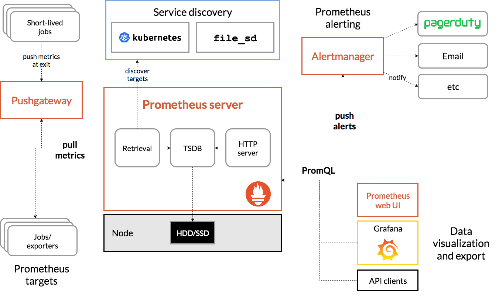
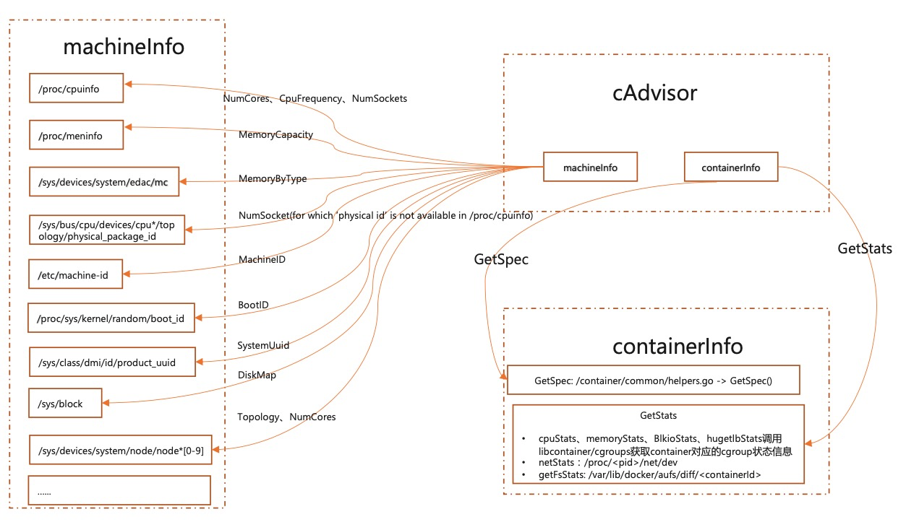
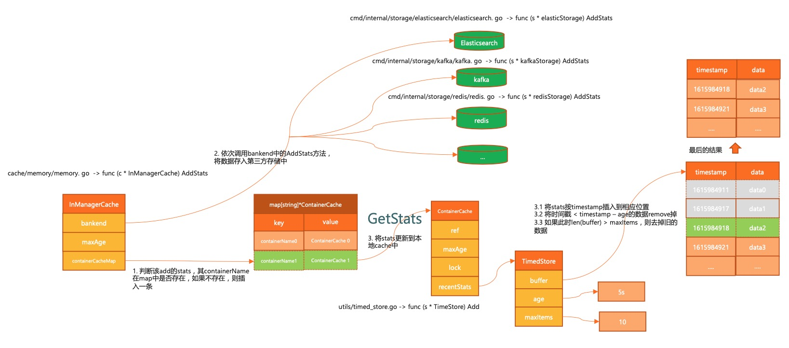
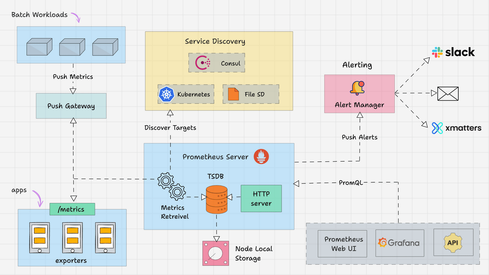
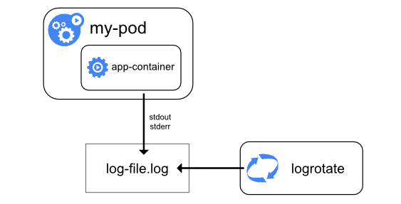
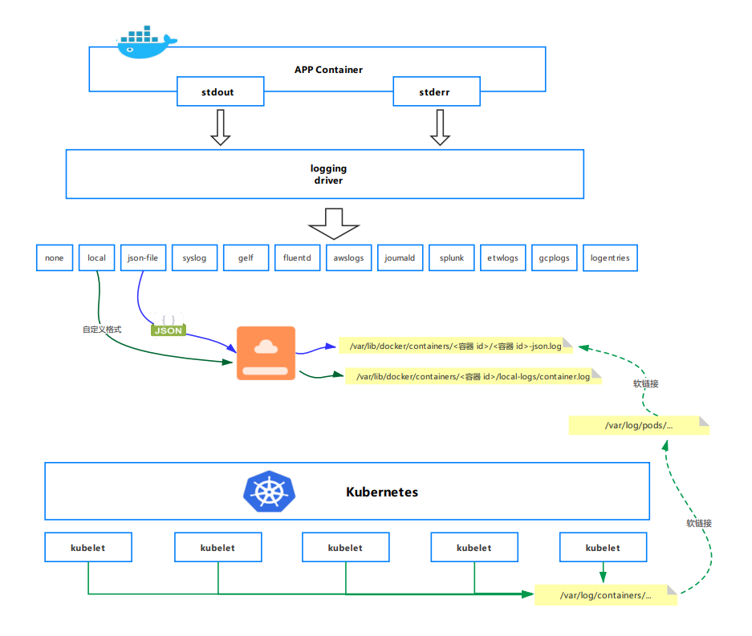
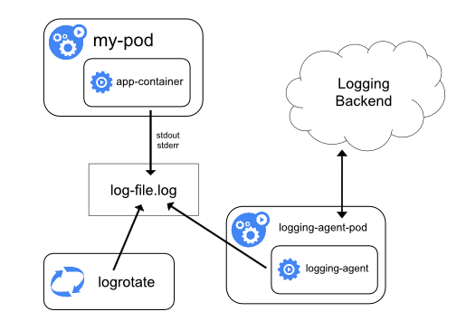
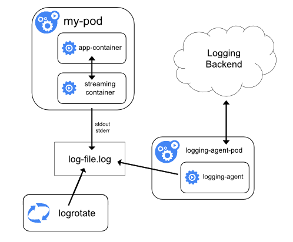

Kubernetes 容器监控与日志#
Author by: 何晨阳
前文介绍了k8s的主体功能，本节将介绍对k8s的容器监控与日志机制，负责对系统整体运行健康状态的监测。通过监控与日志，可以帮助我们全方位的掌控系统健康状态，更加高效的排查问题。
容器监控体系#
容器监控体系旨在实时追踪容器化应用与集群资源的状态，为故障排查、性能优化和容量规划提供数据支撑。本小节将从监控指标、数据采集与监控工具三个方向来介绍。
监控主要有以下几个作用：
资源利用率监控：实时跟踪 CPU、内存、磁盘、网络等资源使用情况。
应用健康检查：确保容器进程存活、服务可达性、响应延迟可控。
故障诊断与根因分析：快速定位性能瓶颈（如内存泄漏、CPU 争抢）。
自动化运维支持：为 HPA（自动扩缩容）、VPA（垂直扩缩容）提供数据依据。
如下图所示，一个成熟监控方案中主要包括指标采集、监控工具、告警等几个模块。

监控指标#
监控数据主要来源于监控对象，在k8s中，监控对象可以分为应用层、Node层、容器层以及k8s对象状态。
应用层（Application）#
由应用层自定义上传相关监控指标，不同系统的监控指标又各不相同。一些常见的指标如下：
延迟：比如SQL执行延迟，用于识别慢查询、网络瓶颈或代码性能问题。
流量：单位时间内的请求量或数据吞吐量，评估负载压力，触发自动扩缩容（HPA）。
错误数：失败请求数，监控服务异常。
饱和度：资源利用率接近上限的程度，用于预防资源耗尽导致雪崩效应。
Node层指标#
Node层主要关注节点资源使用、健康状态及底层服务运行情况。关注指标主要包括以下：
CPU 使用率：node_cpu_seconds_total，用于识别CPU过载。
内存使用量：node_memory_MemTotal_bytes、node_memory_MemAvailable_bytes。
磁盘 I/O：node_disk_read_bytes_total（读取量）、node_disk_written_bytes_total（写入量）。
网络流量：node_network_receive_bytes_total（接收流量）和node_network_transmit_bytes_total（发送流量）。
容器层指标#
容器层关注的指标和 Node 层类似，除了一些基础指标外，还关注一些容器的特有指标：
容器CPU使用率：表示容器在单位时间内消耗的CPU资源占其请求（Request）或限制（Limit）的比例，反映计算密集型任务的资源压力。
容器内存使用量：容器实际占用的物理内存。
容器重启次数：容器因异常退出（如崩溃、探针失败）而被Kubernetes自动重启的次数，反映应用稳定性。
容器网络流量：包括接收（入站）和发送（出站）的数据量，用于分析应用通信模式及网络性能。
数据采集工具 cAdvisor#
cAdvisor 由 Goole 开发的容器监控工具，是Kubernetes生态中容器资源监控的核心组件，默认集成在 kubelet中，专注于实时收集、聚合和展示容器级别的资源使用数据，为容器化提供基础监控能力。
主要功能#
资源监控：
CPU：使用时间、利用率、限制。
内存：工作集（Working Set）、缓存（Cache）、交换（Swap）。
文件系统：磁盘 I/O、存储使用量。
网络：接口流量、错误计数。
容器层级统计：
支持容器、Pod、节点多级视图。
提供历史数据（默认存储最近 1 分钟的数据）。
事件记录：
容器启动、停止、OOM（内存溢出）等事件。
数据采集过程#
数据采集主要包括两个部分：machineInfo 和 containerInfo。
machine 相关的数据主要读取机器的系统文件数据，然后由一个周期任务，更新本地 cache。具体读的文件数据见下图。

获取容器相关的数据，主要是监控 cgroupPath 目录下的变更，拿到该目录下的增删改查事件，然后更新 cache 中的数据。
数据存储#
监控数据不仅能放在本地，还能存储到第三方存储介质中。支持 bigquery、es、influxdb、kafka、redis 等组件。
执行过程如下所示：
首先通过 memory 接口，将数据存在本地。
将新写入的监控数据根据时间戳，进行聚合处理。
调用各介质的 AddStats 方法，将数据存入第三方存储介质。

监控工具 Prometheus#
核心设计#
Prometheus是一款开源的时序数据库与监控告警系统，专为云原生环境设计，已成为Kubernetes生态中监控事实标准。原生的支持对K8S中各个组件进行监控。
架构图如下所示，主要包括以下几个核心模块：
Prometheus Server：作为监控系统的大脑，主要工作是根据配置定期从目标拉取指标。
抓取器（Retriever）：定期从配置的目标（如 Exporters、应用端点）拉取指标。
时序数据库（TSDB）：高效存储时间序列数据。
HTTP Server：提供查询接口（PromQL）和 Web UI。
Exporters：将第三方系统（如Node Exporter、MySQL Exporter）的指标转换为Prometheus格式。
节点导出器（Node Exporter）：采集主机资源指标（CPU、内存、磁盘）。
应用导出器（如 JMX Exporter）：将应用指标转换为 Prometheus 格式。
Pushgateway：用于接收短期任务推送的指标，供Prometheus拉取。
用于短期任务或批处理作业的指标暂存（Prometheus 默认拉取模型不适用）。
Alertmanager：根据监控中的设置的指标阈值发送警报。同时支持对告警去重、抑制和分组。
处理 Prometheus 的告警通知，支持去重、分组、静默和路由到不同渠道（Email、Slack 等）。
Client Libraries：可以作为一个Library集成到应用中，暴露自定义指标。
比如go接入示例如下所示：
httpRequests := prometheus.NewCounterVec(
prometheus.CounterOpts{
Name: "http_requests_total",
Help: "Total HTTP requests",
},
[]string{"method", "path"},
)
prometheus.MustRegister(httpRequests)

指标类型#
Prometheus中主要包括以下几类指标类型：
Counter：计数器，单调递增的累计值，比如请求个数等。
Gauge：仪表盘，可增可减的瞬时值，如 CPU、内存等。
Histogram：直方图，采样观测值的分布，比如请求的响应时间，小于 10ms 有多少个，小于 50ms 有多少个等。
Summary：类似直方图，只是表现形式不同，比如请求响应时间，70%小于 10ms，90%小于 50ms。
使用示例#
使用 Helm 部署（推荐）
第一步：安装 helm
# 安装 Helm CLI
curl https://raw.githubusercontent.com/helm/helm/main/scripts/get-helm-3 | bash
第二步：添加 Prometheus Helm 仓库
# 安装 Helm CLI
curl https://raw.githubusercontent.com/helm/helm/main/scripts/get-helm-3 | bash
第三步：部署 Prometheus
# 创建命名空间
kubectl create ns monitoring
# 安装 Prometheus Stack（包含 Prometheus + Grafana + Alertmanager）
helm install prometheus prometheus-community/kube-prometheus-stack \
--namespace monitoring \
--set prometheus.prometheusSpec.storageSpec.volumeClaimTemplate.spec.storageClassName="<your-storage-class>" \
--set prometheus.prometheusSpec.storageSpec.volumeClaimTemplate.spec.resources.requests.storage="50Gi"
第四步：验证部署
kubectl get pods -n monitoring
第五步：访问服务
kubectl port-forward -n monitoring svc/prometheus-prometheus-oper-prometheus 9090
# 访问 http://localhost:9090
告警配置示例#
比如监控 api-server 服务的请求延迟，当 5 分钟平均延迟持续 10 分钟超过 0.5 秒时，触发严重告警。
groups:
- name: example
rules:
- alert: HighRequestLatency
expr: job:http_request_duration_seconds:mean5m{job="api-server"} > 0.5
for: 10m
labels:
severity: critical
annotations:
summary: "High request latency on {{ $labels.instance }}"
容器日志#
日志通常是我们排查问题的一大杀器，在云原生中，容器应用和传统应用的日志管理存在很大区别。本节将介绍k8s中的日志管理方案。
Kubernetes 日志种类#
k8s中主要存在两种类型的日志：
集群组件日志：1）运行在容器中的 scheduler、kube-proxy、kube-apiserver 等。2）未运行在容器中的 kubelet 和 runtime 等。
Pod 日志
应用 POD 日志#
Pod 的日志管理是基于 Docker 引擎，日志的存储都是基于 Docker 的日志管理策略。

如果 Docker 日志驱动为 json-file，那么在 k8s 每个节点上，kubelet 会为每个容器创建一个/var/log/containers/的软链接，并会将其链接到/var/log/pods/目录下相应 pod 目录的容器日志。被链接的日志文件也是软链接，最终链接到 Docker 容器引擎的日志存储目录：/docker 数据盘目录/containers 下相应容器的日志。

可以看出这个地方进行了两次软链接，为什么要做两次软链接呢？
主要是为了方便日志采集。/var/log/containers/目录下软链接了当前节点所有 Pod 下所有容器的所有日志文件，这样采集工具只需要采集/var/log/containers/目录就能采集到当前节点下的所有容器日志文件
k8s 日志收集方案#
k8s 官方给出三种日志收集方案：
使用运行在每个节点上的节点级日志代理
在应用 Pod 中增加记录日志的 sidecar 容器
应用直接将日志输出到自定义位置中，如日志平台
节点级日志代理方案#
每个节点运行一个日志代理，以 DaemonSet 方式运行在每个节点中，由这个 agent 将日志转发出去。日志代理工具有 fluentd、filebeat 和 logstash 等。
在 Node 上部署 logging agent 主要的优点是一个节点只需要部署一个 agent，不会对应用 Pod 产生侵入性。缺点就是要求应用输出的日志，要直接输出到容器的 stdout 和 stderr 中。

sidecar 容器方案#
针对日志代理方案的缺点，可以通过一个 sidecar 容器把这些文件重新输出到 sidecar 的 stdout 和 stderr 上。比如应用 Pod 中有一个容器，它把日志输出到容器的/var/log/a.log 和 b.log 中，此时使用 kubectl logs 是看不到应用日志的。这种情况下就可以为这个 Pod 添加两个 sidecar 容器，分别将这两个日志文件以 stdout 和 stderr 的方式输出来。
这种方案的缺点是宿主机上会存在两份相同的日志文件：一份是自己写的，一份是 sidecar 的 stdout、stderr 对应的 json 文件，会造成磁盘的浪费。

使用 sidecar 还有另一种方式，就是不需要节点级日志代理。和应用容器在一起的 sidecar 直接运行在 Pod 中，由 sidecar 直接把日志传输到日志平台。这种方式在 Pod 数量很多的时候，资源消耗会很高。另一种缺点是由于日志没有打到 stdout 和 stderr，所以无法使用 kubectl logs 查看日志。
应用直接输出#
由应用直接将日志输出到日志平台，比如 Java 应用中的 appender。这种方案要求公司具有比较健壮的日志系统。
总结与思考#
k8s 容器监控已形成以 Prometheus 为核心的多层次生态，结合 cAdvisor、Metrics Server 等实现资源、应用、节点等多维指标采集。支持自动扩缩容、可视化和分布式追踪。
未来在可观测性方面，可以结合 AI/ML，来自动识别性能异常、故障根因、异常流量、攻击行为。并基于历史指标与日志数据预测资源瓶颈、服务异常，提前扩容或修复。这些能力可以进一步提升整个系统的可观测性与智能化能力。
参考文档#
https://www.cnblogs.com/chenqionghe/p/11718365.html
https://www.cnblogs.com/cheyunhua/p/17126430.html
https://www.cnblogs.com/evescn/p/18256900
https://www.cnblogs.com/vinsent/p/15830271.html
https://www.cnblogs.com/zhangmingcheng/p/16452365.html
https://www.huweihuang.com/kubernetes-notes/monitor/cadvisor-introduction.html
https://flashcat.cloud/blog/prometheus-architecture/